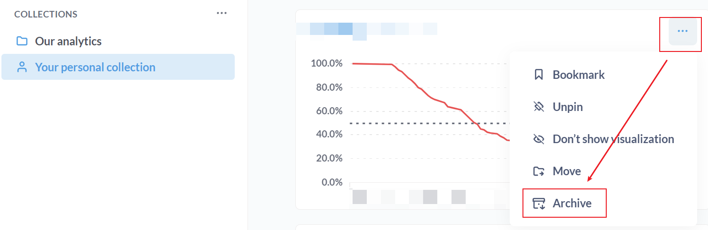
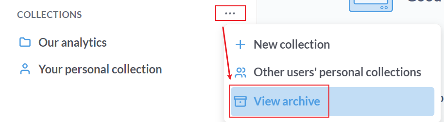
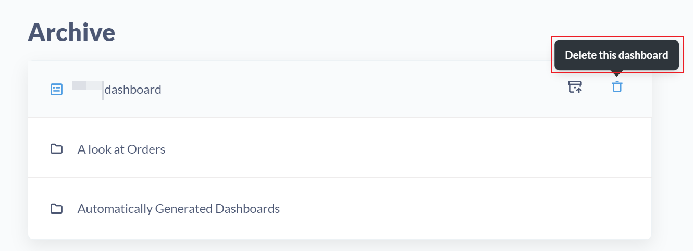

Metabase 安装和使用
序言
Metabase 是一个开源的数据分析工具，操作简单，可以连接到多种数据源。虽然数据分析能力没有 Excel 强大，Metabase 也足够日常使用了。并且，我更擅长写 SQL，而不是操作 Excel，因此 Metabase 是个很好的选择。
Docker compose
1 | version: '3' |
- Metabase 默认使用 h2 数据库，存放在
/metabase.db目录下。在生产环境下，建议使用 MySQL 或者 PostgreSQL（个人使用的话，不需要这一步）。
使用
Metabase 的基本使用可以看这个教程，其中介绍了大部分图表的种类，适合没有接触过数据分析的新手。
值得一提的是如何删除 question 或 dashboard：
-
首先 archive 想要删除的 question：

-
然后进入 Archive 界面（或者从
/archive进入）：
-
在这里点击删除：
